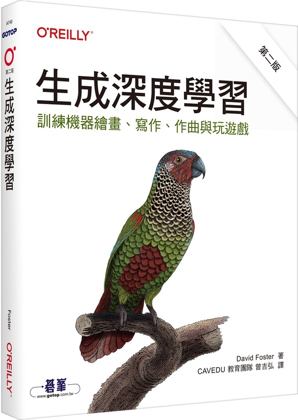

這是一本讓機器學會「創作」的實作書。作者帶你用 TensorFlow 與 Keras 從頭實作各種生成模型,從變分自編碼器、生成對抗網路,一路談到自迴歸模型、Transformer 與擴散模型。適合已有機器學習基礎、想弄懂圖像與文字生成背後原理的工程師與資料科學家。
想學 AI,卻常被數學擋在門外嗎?這本書把機器學習背後會用到的數學,用淺白的說明與實例整理起來,讓你知道每個公式是為了解決什麼問題。它不是要你成為數學家,而是替之後讀深度學習、統計模型的你,先把地基打穩。
從懷孕、生產到哺育,母親常夾在「理想中的自己」與「父權體制的期待」之間。作者以法國社會為背景,討論母職裡的兩難:女性主義為什麼不該拋下母親?而母職又能怎樣成為一種被尊重、被選擇的實作?給正在當媽媽的人,也給身邊的人。
小說設定在昭和年間,一位日本女作家來臺灣巡迴演講,身邊有一位臺灣女子擔任通譯與嚮導。兩人一路吃遍島上美食,也在殖民者與被殖民者的身分之間,慢慢靠近、又悄悄拉開距離。本書獲得金鼎獎,英譯版也拿下美國國家圖書獎翻譯文學獎。
你知道臺灣方音符號,其實是在大家熟悉的注音上,再補上台語獨有的發音嗎?這本書就從這裡入門,用已經會的ㄅㄆㄇ當作跳板,帶你學會一句句日常會用到的台語,讓台語學習不再從「陌生的拼音」開始。
「我都是為你好」「我是你媽,難道會害你嗎?」這些話聽起來像愛,有時卻是控制。作者從精神科診間的案例出發,拆解父母的情緒勒索、遷怒與差別待遇,並談到受傷的人要如何辨認這些傷、不再把同樣的傷害傳給下一代。
作者曾任日本星巴克執行長與 The Body Shop 日本社長。他挑出 51 句管理者可以放在心裡的話,說明領導者不必天生完美,而是要在每個選擇裡展現值得被追隨的品格。篇幅短、可以隨手翻,適合剛接下帶人工作的新手主管。
封面圖待補;另有一本簡體中文同名書,若你指的是那一本請告訴貓貓。
想把話說清楚,不是靠口才,而是靠結構。本書一頁一個重點、搭配圖解,先講邏輯的基礎,再教你如何組織內容,並用相互關係圖、流程圖、矩陣圖等圖例,讓說話、簡報與提案都更有條理。
這是一部以女性視角出發的小說,走進「特約茶室」,也就是軍中樂園。那是士兵口中的樂園,卻是侍應生的失樂園。作者試圖貼近她們的日常、情感與處境,讓歷史裡很少被說出口的人,有了自己的聲音。
為什麼今天的臺灣政壇,幾乎人人都對「經國先生」有好評?書中追問:這份形象是怎麼來的?作者把它當成國家機器的形象建構工程來檢視,帶讀者看一位政治人物如何被塑造成「偉大領袖」,也提醒我們該如何閱讀歷史人物的光環。